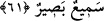
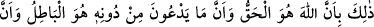
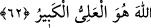
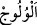
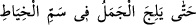

Nitekim et-Tenvîr’de der ki: “Bir kimse başkasına “Ey zinâkar” dese, diğeri de ona:
“Hayır aksine zinâkar sensin” dese ona da had uygulanır. Ancak öyle değil de birisi
diğerine ‘Ey habis’ dese, öteki de “Sensin habis” dese, ödeşirler.” Yine et-Tenvîr’de
şöyle der: “Bir kimse başkasına haksız yere vursa, vurulan da vurana vursa, ikisi de
tâzir cezâsına çarptırılır. Tâzirin tatbîkine önce vurandan başlanır.”
61. Böylece (Allah, haksızlığa uğrayana yardım edecektir ve buna kadirdir).
Çünkü Allah, geceyi gündüze katar, gündüzü geceye katar. Şu da muhakkak ki
Allah, hakkıyla işiten ve görendir.
“Böylece” Allah, haksızlığa uğrayana yardım edecektir ve buna kâdirdir. “Çünkü
Allah, geceyi gündüze katar, gündüzü geceye katar.” Yâni bu Allah’ın yardımı,
Allah’ın gâlib kılma ve diğer hususlarda dilediğini yapmaya kâdir olması sebebiyledir.
Güneşi görünmez kılarak gecenin karanlığını gündüzün aydınlığı yerinde hâsıl etmesi,
güneşin doğmasını sağlayıp onu yükselterek gecenin karanlığının yerine gündüzün
aydınlığını hâsıl etmesi veya gece ve gündüzün birinden eksilen saatleri diğerine
eklemesi
Allah’ın
gâlib
kılacağına
delâlet
eden
sonsuz
kudretinin
âyetlerinden/delillerindendir.
Râğıb der ki: “ dar bir yere girmektir. Allah Teâlâ:
“ …deve iğne deliğine girinceye kadar...” (el-A‘râf, 7/40)
buyurmuştur. “Allah, geceyi gündüze katar, gündüzü geceye katar” âyeti ise gecenin
gündüzün içinde ziyâdeleşmesi ve gecenin içinde gündüzün ziyâdeleşmesi şeklinde
Allah’ın âlemi terkîb etmesine dikkat çekmektedir. Bu uzama ve kısalma güneşin doğuş
ve batış yerlerine göredir.
“Şu da muhakkak ki Allah, hakkıyla işiten ve görendir.” Zulmedenin ve zulmedilenin
sözlerini işitir, onların fiillerini görür ve göz ardı etmez.
62. Böyledir. Çünkü Allah, hakkın ta kendisidir. O’nun dışındaki taptıkları ise
bâtılın ta kendisidir. Gerçek şu ki Allah, evet O, uludur, büyüktür.
“Böyledir.” Allah’ın ilim ve kudretin kemali ile vasfedilmesi böyledir. “Çünkü
Allah,” ülûhiyyette “hakkın ta kendisidir. O’nun dışındaki” duâ edip “taptıkları ise